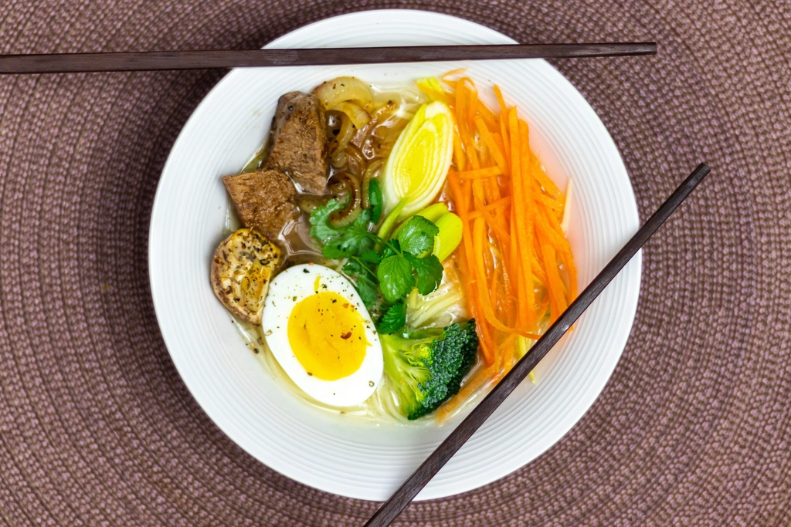
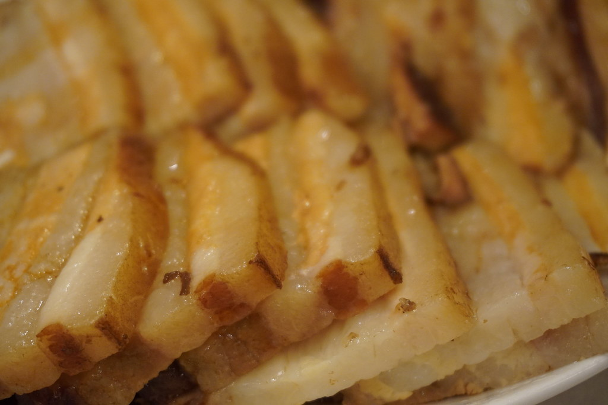

スープ
液状の背脂に、煮干し風味と醤油のコクを効かせたスープです。 打ち起こした銅がまとう琥珀色のように、じっくりと煮出した色合いが特徴です。 背脂の量は「中油」を基本としていますが、ご注文の際にお好みの量をお伝えいただけます。

NIIGATA SANJO / TSUBAME-SANJO STYLE
三条から、燕背脂系ラーメンを。
打ち起こした銅が艶を帯びるように、一杯のスープにも時間をかける。
液状背脂と煮干し風味、自家製の平打ち太麺。三条市居島で、夜だけお出ししています。
OPEN INFORMATION
2026年8月7日、新潟県三条市居島に「らーめん花園」がオープンいたしました。
営業は夜20時から。スープがなくなり次第、その日の営業を終えさせていただいております。
営業時間・定休日は日により変更となる場合がございます。
最新情報はInstagramにてご確認ください。
COMMITMENT
鎚起銅器が一枚の銅板を根気よく打ち起こしてかたちにするように、スープも麺もチャーシューも、 手間を惜しまず仕込んでいます。
液状の背脂に、煮干し風味と醤油のコクを効かせたスープです。 打ち起こした銅がまとう琥珀色のように、じっくりと煮出した色合いが特徴です。 背脂の量は「中油」を基本としていますが、ご注文の際にお好みの量をお伝えいただけます。
自家製のストレート平打ち太麺を使用しています。 つるっとした喉越しと、もちっとした食感をお楽しみいただけます。

厚切りのチャーシューを2枚のせています。 じっくりと味を染み込ませ、肉の旨みを感じていただける一枚です。
OWNER'S STORY
「らーめん花園」という店名は、店主がラグビーに打ち込んでいた日々に由来しています。 全国高校ラグビーの舞台として知られる「花園」。かつてその場所を目指して土のグラウンドに立った記憶を、 自分の店の名前に重ねました。
ラグビーは、一本のタックル、一度のスクラムを丁寧に積み重ねてようやく前に進む競技です。 その姿勢は、スープを煮出し、麺を打ち、チャーシューを漬け込む、ラーメンづくりの一つひとつの工程にも 通じるものがあると感じています。
燕三条の職人が銅板を何度も打ち起こして一つの形に仕上げるように、 三条の地で、一杯一杯を丁寧にお出ししていきたいと思います。 まだ始まったばかりの店ですが、どうぞよろしくお願いいたします。
INTERIOR
店内はカウンター6席、4人掛けの座敷を3卓ご用意しています。 おひとりでの来店にはカウンター席を、ご家族やグループでのご利用には座敷席をご利用いただけます。
カウンター6席 / 4人座敷 3卓
VOICE
Google口コミ 評価4.7(6件)
Googleの口コミにて、ご来店いただいたお客様より声をいただいております。 その中から2件をご紹介いたします。
背脂系の塩ラーメンをいただきました。少し濃いめでとても美味しかったです。 店内はカウンター席と小上がり席があり、雰囲気の良いお店でした。
― ご来店のお客様より
もやしラーメンを大油でいただきました。醤油のキレと背脂、もやし炒めの油の組み合わせが絶妙でした。 平打ち麺と背脂の組み合わせが好きな方には、特におすすめの一杯だと思います。
― ご来店のお客様より
ACCESS
営業時間・定休日など最新の情報はInstagramにて発信しています。ご来店前にあわせてご確認ください。
| 店名 | らーめん花園 |
|---|---|
| 住所 | 〒955-0066 新潟県三条市居島1-21 |
| 営業時間 | 20:00〜(スープがなくなり次第終了/日により変動) |
| 定休日 | 準備中 |
| 電話番号 | 準備中 |
| 座席 | カウンター6席、4人座敷3卓 |
| SNS |
新潟県三条市居島1-21にございます。地図でご確認いただけます。
一部の写真はフリー素材のイメージです。実際の店内・お料理写真は貴店ご提供のものに差し替えます